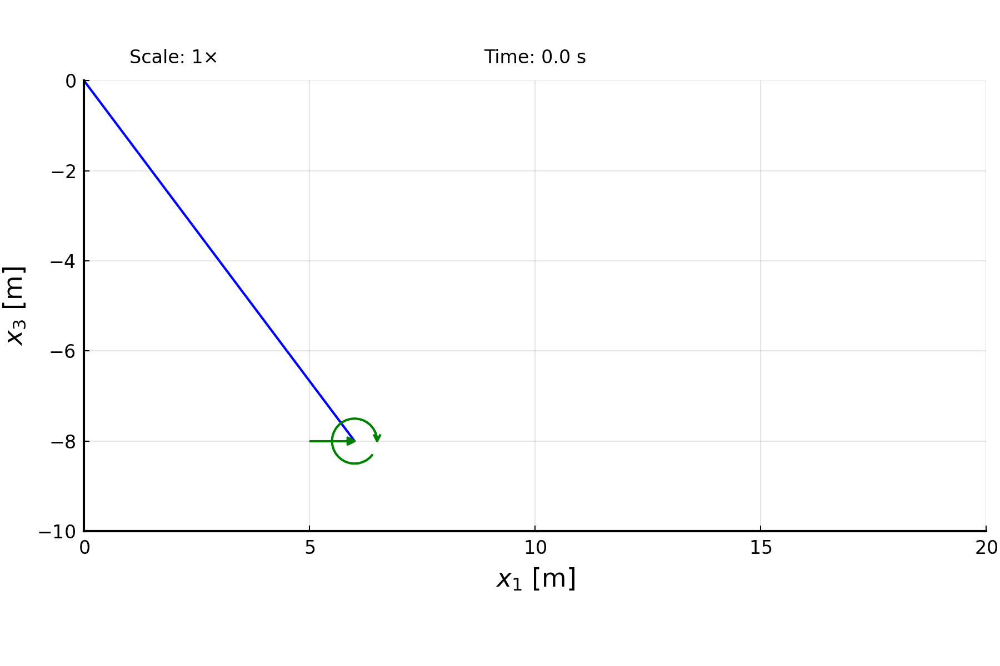

Dynamic analysis of an articulated beam
This example illustrates how to set up a dynamic analysis, using the articulated beam in free flight proposed by Simo and Vu-Quoc:
 Articulated beam: definition and motion by Simo and Vu-Quoc
Articulated beam: definition and motion by Simo and Vu-Quoc
The code for this example is available here.
Beam
The set up of this problem begins with the definition of the articulated links (beams), each with its own inertia properties. Notice, however, that we create a single beam, which has different properties for each half of its elements. This beam has a hinge defined by the arguments hingedNodes and hingedNodesDoF of the function create_Beam.
using AeroBeams, LinearAlgebra
# Beam
L = 10
EA,GA,GJ,EI = 1e6,1e6,1e6,1e4
ρA,ρI1,ρI2 = 1,1,10
θ₀ = atan(4/3)
nElem = 20
stiffnessMatrix = diagm([EA,GA,GA,GJ,EI,EI])
inertiaMatrix1 = diagm([ρA,ρA,ρA,2*ρI1,ρI1,ρI1])
inertiaMatrix2 = diagm([ρA,ρA,ρA,2*ρI2,ρI2,ρI2])
inertiaMatrices = vcat([inertiaMatrix2 for _ in 1:div(nElem,2)],[inertiaMatrix1 for _ in 1:div(nElem,2)])
beam = create_Beam(name="beam",length=L,nElements=nElem,C=[stiffnessMatrix],I=inertiaMatrices,rotationParametrization="E321",p0=[0;θ₀;0],hingedNodes=[div(nElem,2)+1],hingedNodesDoF=[[false,true,false]])Boundary conditions
The boundary conditions consist of the force and moment impulses applied at one end of the beam.
# BCs
M₀ = 160
τ = 0.5
M2 = t -> ifelse.(t.<=τ, M₀, 0)
F1 = t -> M2(t)/4
forces = create_BC(name="forces",beam=beam,node=nElem+1,types=["F1A","M2A"],values=[t->F1(t),t->M2(t)])Model
Our model is composed of the beam and the boundary conditions. We name it flyingScissors.
# Model
flyingScissors = create_Model(name="flyingScissors",beams=[beam],BCs=[forces])Problem
The problem is solved for a total time tf, with a time step Δt.
# Time variables
tf = 5
Δt = 5e-2
# Initial velocities update options
initialVelocitiesUpdateOptions = InitialVelocitiesUpdateOptions(maxIter=2, Δt=Δt/10)
# Create and solve the problem
problem = create_DynamicProblem(model=flyingScissors,finalTime=tf,Δt=Δt,initialVelocitiesUpdateOptions=initialVelocitiesUpdateOptions)
solve!(problem)Post-processing
The first post-processing step is to retrieve the outputs of interest, namely the displacements at each end of the articulated beam.
# Unpack numerical solution
t = problem.timeVector
u1_tipA = [problem.nodalStatesOverTime[i][1].u_n2[1] for i in 1:length(t)]
u3_tipA = [problem.nodalStatesOverTime[i][1].u_n2[3] for i in 1:length(t)]
u1_tipB = [problem.nodalStatesOverTime[i][nElem].u_n2[1] for i in 1:length(t)]
u3_tipB = [problem.nodalStatesOverTime[i][nElem].u_n2[3] for i in 1:length(t)]
u1_hinge = [problem.nodalStatesOverTime[i][div(nElem,2)].u_n2[1] for i in 1:length(t)]
u3_hinge = [problem.nodalStatesOverTime[i][div(nElem,2)].u_n2[3] for i in 1:length(t)]Let's plot the displacements at the tip of each link and at the hinge.
using Plots
gr()
# Nomalized u1 displacements
labels = ["Tip A" "Hinge" "Tip B"]
plt1 = plot(xlabel="\$t\$ [s]", ylabel="\$u_1/L\$")
plot!(t,[u1_tipA/L, u1_hinge/L, u1_tipB/L], lw=2, label=labels)
# Nomalized u3 displacements
plt2 = plot(xlabel="\$t\$ [s]", ylabel="\$u_3/L\$")
plot!(t,[u3_tipA/L, u3_hinge/L, u3_tipB/L], lw=2, label=labels)
Finaly, we may visualize the motion of the beam using the function plot_dynamic_deformation with the appropriate inputs. It correlates well with the one displayed by Simo and Vu-Quoc.
# Animation
plot_dynamic_deformation(problem,refBasis="I",plotFrequency=1,plotLimits=[(0,2*L),(-L,0),(-L/2,L/2)],save=true,savePath="/docs/build/literate/flyingScissors_motion.gif")
This page was generated using Literate.jl.